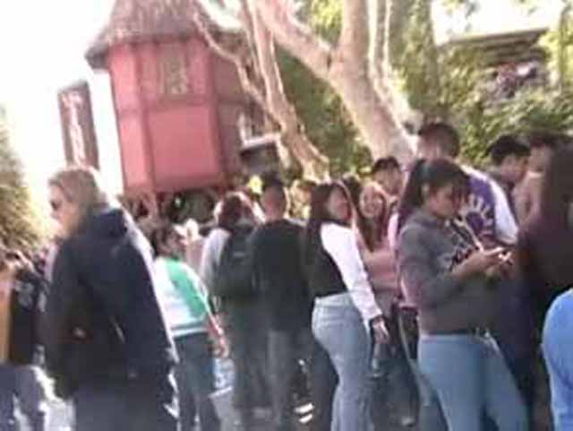
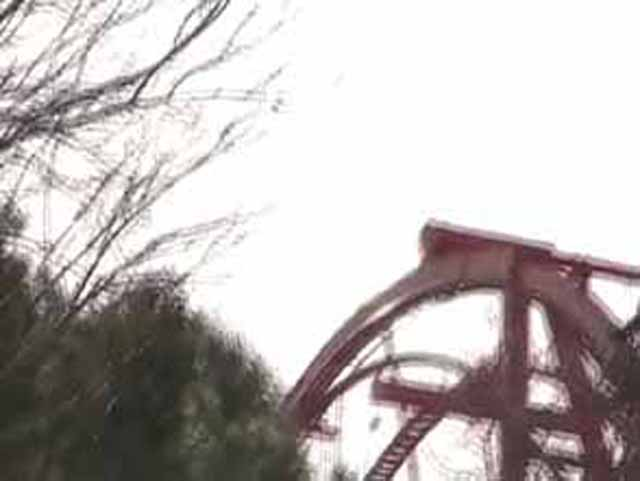
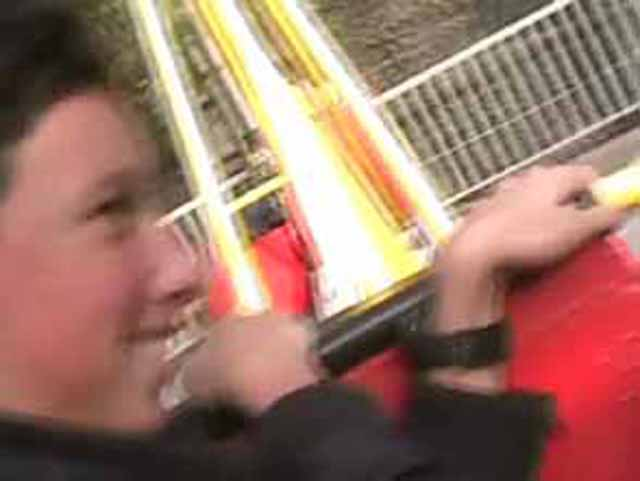
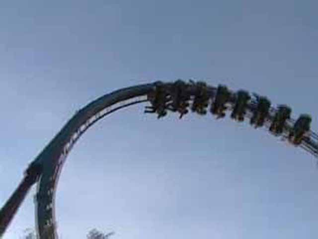

Last 2005 Update
 Revolution was closed today...
Revolution was closed today...
Because a peice of track was missing so Tatsu would go there!
 Batman had a short line! Yay! The ride has Force!
Batman had a short line! Yay! The ride has Force!
Someone barfed on Riddlers Revenge causing a one train operation! Damn you whoever barfed on the Riddlers Train!
Well they cleaned the train up quickley, The line was short, the ride was fun and you were wrong about that last corkscrew Cody!
 The aftermath of riding Psyclone. A beaten up body, A headache, and a pain in your ass!
The aftermath of riding Psyclone. A beaten up body, A headache, and a pain in your ass!

OH MY GOD! Look at the line for Log Jammer! Its longer than ever before!
Marvin was here to entertain the smart little kids who didn't wait in 20 min lines for CANYON BLASTER!!!!!

Tatsu already has its lifthill up! The ride must be quick at construction!
 Goliath looks nice today! Looks fast and orange and fun!
Goliath looks nice today! Looks fast and orange and fun!
 But OH MY GOD!!!! Look at THAT LINE! Holy Crap! That must take FOREVER!!!!
But OH MY GOD!!!! Look at THAT LINE! Holy Crap! That must take FOREVER!!!!
Everyone riding the Pirate Ship is doing their Andrew impression!
When you see a line for Grinders Gearworks, thats never a good sign!
My mom is enjoying her ride.
 Roundups are fun! Good Positive Gs!
Roundups are fun! Good Positive Gs!
What! I have to film myself riding sometimes too!

Cody is doing his Celeste fighting the power impression from Fall 2005 Photos!
 DejaVu looks cool from this angle!
DejaVu looks cool from this angle!
The plastic toy is stuck to Codys hand!
 Supermans line was packed! So we didn't ride.
Supermans line was packed! So we didn't ride.
After yelling and flipping off the plastic toy, Cody tries to get rid of it by rolling it down Samaurui Summit!
 Scream the parking lot floorless also had a long line, but so did everything else in the park! So we rode!
Scream the parking lot floorless also had a long line, but so did everything else in the park! So we rode!

Scream is fun! But it makes me miss Medusa!
 Scream gave Cody a new Hairstyle! Fresh from the coaster!
Scream gave Cody a new Hairstyle! Fresh from the coaster!
Let Mr.Six STAY!!!!!!!!!!!!!
Heres a poster of Tatsu! SFMMs Soon to be New Coaster!
Home